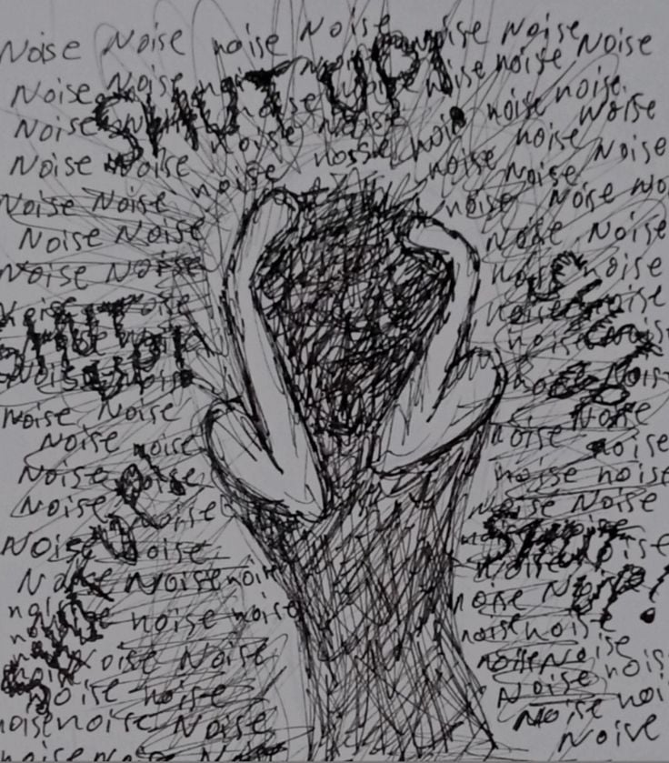
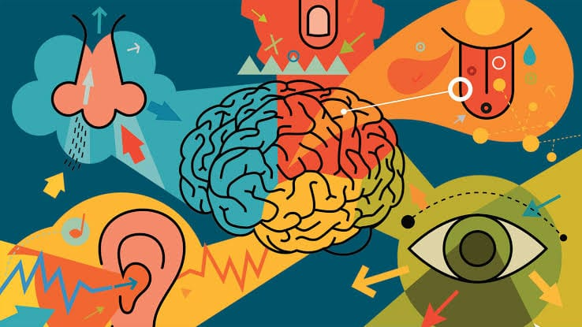

Modernized high school blog project
Growth Horizon
Student-written reflections about discipline, self-awareness, setbacks, and the lessons that shape personal development.
Overcoming Self-Deception: How to See Yourself More Clearly
A practical look at recognizing blind spots, seeking honest feedback, and building a clearer relationship with yourself.
Latest reflections
Blog library
Search by topic, author, or title. The posts stay simple, but the browsing experience now feels intentional and easier to scan.
7 stories
From Full-Time Student to Working Student
How the pandemic changed one student's schedule, priorities, and view of responsibility.
Read story
From Fumbles to Triumphs
A reflection on setbacks, recovery, and turning interrupted progress into a stronger comeback.
Read story
Breaking Free
A personal story about recognizing negative thought patterns and learning healthier responses.
Read storyOvercoming Self-Deception
How honest reflection and feedback can help us see ourselves more clearly.
Read storyEmpower Yourself
A student reflection on discipline, finding purpose, and rebuilding confidence through effort.
Read story
Very Mindful
An introduction to grounding techniques for staying present during stressful seasons.
Read storyA Hustle and Bustle Life
A candid look at balancing school, work, and personal life after the pandemic.
Read storyNo stories match that search. Try a broader topic or clear the filter.